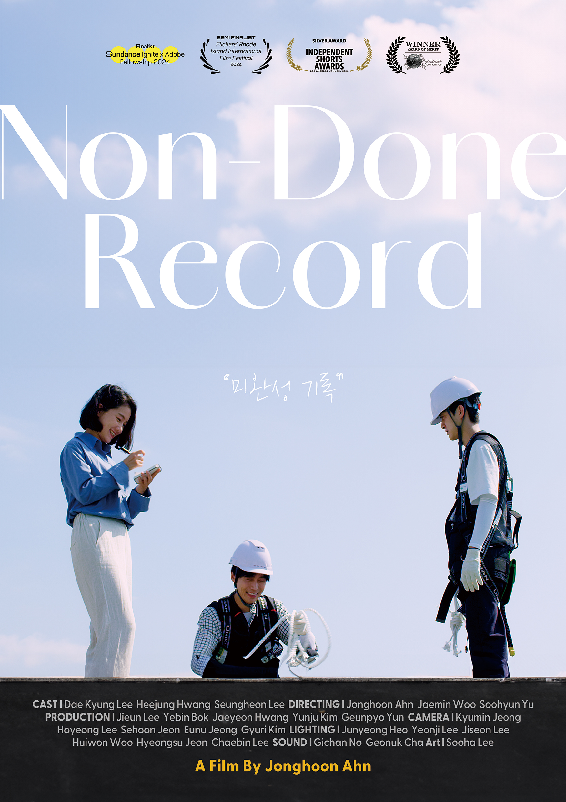

Non-Done Record is a narrative short about an aspiring filmmaker whose final moments unfold as a reconstructed film. Repeated encounters and fragments of unfinished ambition form an unstable space between memory and fiction.
The viewer moves through a sequence of repeated places, abrupt time shifts, and meetings among characters who occupy different versions of an unresolved dream.
I directed the film, shaping its restrained framing, symmetrical compositions, temporal repetitions, actor blocking, and relationship between image and experimental sound.
Rather than explain a character's inner state through exposition, I used formal repetition and a limited visual vocabulary to make psychic paralysis visible. The narrative demonstrates my ability to carry an abstract premise into a finished cinematic structure.
